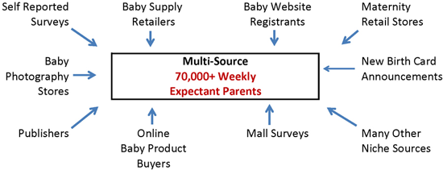

Life events are impactful moments in your life. Starting a family, buying your first house; they are moments of change. Marketers want nothing more than to find out what these big moments are. They know that you’re likely to be forming new habits, which is best time to insert themselves in your life. Understanding this is a key part of understanding the value of personal data.
Where you live, your age and other demographic information all give away something marketers can use to target you. But it’s only slightly useful in finding the right person to target. A newly graduated college student moving to a new city for their first job has radically different needs from the new parent. They can both be 24 and living in Paris, but it’s what’s going on in their life that’s worth knowing.
Changing habits
People are habitual creatures. Once they form habits, it’s very hard to break them out of it. That’s why businesses focus on life events. Those are the moments your major habits are up for grabs. A grocery store promoting itself as the go-to store for everything baby to new parents hopes to become part of their patterns and find long-term customers.
This can be seen in the value of such data. A regular categorised life event, such as being a new homeowner, is worth about $0.10 per person. Wedding planning is a period of high spending, but the market is very competitive, so they are around $0.125 per newly engaged person.
Some life events are more valuable though. Pregnancy skyrockets that price up to 15 times the baseline: $1,50 per person. A database of expecting parents is worth a lot, which is why a lot of the pregnancy industry is a data mill. Check the figure below, straight from a data broker, for an overview of the sources they use.

Pregnancy may be the most extreme example. It’s not only a time of major change, but also has the chance to bind customers to a business for a long time. It makes a huge difference if they buy Pampers instead of store brand diapers for a few years.
By figuring out when life events are happening, companies hope to engage with you when your habits are changing. It’s when their targeted marketing is the most cost-effective. Knowing what’s going on in your life allows them to extract the maximum value from their customers.
How businesses track life events
Most life events are not gathered by just asking for them, except when you’re Facebook. Businesses use several ways to collect the necessary information. A common method is the use of customer accounts and membership cards. They can be used to tie purchases to specific consumers, allowing them to find patterns and classify you.
A well-known example is of this practice is Target. Published back in 2012, it was one of the first major stories on far-reaching customer tracking. By creating customer profiles, Target managed to expose a teen’s pregnancy through targeted advertisement before she told her parents. With just a few data points, they were able to correctly guess she was pregnant.
They even went so far as to estimate delivery dates based on shopping patterns. The article cites an example provided by a Target employee: “Take a fictional Target shopper named Jenny Ward, who is 23, lives in Atlanta and in March bought cocoa-butter lotion, a purse large enough to double as a diaper bag, zinc and magnesium supplements and a bright blue rug. There’s, say, an 87 percent chance that she’s pregnant and that her delivery date is sometime in late August.”
Target trained algorithms on a large amount of customer data to allow them to draw conclusions on others with only a few data points. By combining that knowledge with other data on customer behaviour they know when to reach you, whether you’re more likely to shop online or come to the store, and much more. All so that they can be your go-to choice when you’re having a baby.
Happy first period
It gets even creepier when your daughter turns 11 and you find an envelope from Always in the mail. It contains two menstrual pads and an information booklet about having your first period (Dutch). Of course it’s addressed to the parents, but it’s clear who the message is targeting.
It’s a perfect example of the data value chain in action. The data source for Always traced back to the Royal Dutch Football Association (RFDA). Everyone in The Netherlands who’s registered at a football club is also registered at the RFDA. Even though the girl hadn’t been a member for a few years, the data was still being used somewhere along the line.
The RFDA had sold data with addresses and age ranges of its child members. The buyer was data broker EDM. EDM then combined this with other data and sold it to Procter & Gamble, the parent company of Always. By the time it was used to send targeted letters to girls around the age of their first period, nobody had stopped for a moment to wonder if they were doing the right thing.
Of course all parties involved promised improvement, but more recent reports show nothing of it. The RFDA made headlines again in 2018 by selling bulk contact data of minors, as long as people promise to address it to the parents (Dutch). Not what I would call improvement, but they may have been talking about their bottom line instead of business ethics.
Like a criminal
Tracking is especially hard to avoid when it comes to life events. Because of how big they are, there are things you will need to buy and there’s a lot of social interaction surrounding them. Withholding the anticipation of a wedding from family or not buying diapers for a newborn aren’t things you just decide to do.
When Janet Verseti, a Princeton sociology professor, got pregnant, she chose to take up exactly that challenge, choosing to hide her pregnancy from trackers. She wanted to keep the big data machine out of her personal life.
First, she had to make sure there were no signs of her pregnancy on social media. It’s one of the biggest data source for marketers and, if they don’t gather that data themselves, for Facebook to allow them to directly target people. She even unfriended her uncle after he congratulated her with her pregnancy.
Next up was the bigger problem: not getting identified through your buying behaviour. Physical stores generally accept cash, so that wasn’t too big of a problem. Online shopping turned out to be more difficult. To avoid being tracked by Amazon, Verseti used a privately hosted e-mail address and had everything delivered to a pick-up box. She paid exclusively with gift cards bought with cash. To avoid online behavioural tracking she used the TOR browser, which gives the highest guarantee of anonymity.
The most astounding observation was that choosing privacy made her feel like she was doing something wrong. Buying a large amount of gift cards with cash led to legal issues with the store for potential fraud. Having to be untrackable for mail delivery and using a new e-mail address for online shopping didn’t belong in the experiences of a normal life. As Verseti herself said, “Those kinds of activities, when you take them in the aggregate ... are exactly the kinds of things that tag you as likely engaging in criminal activity, as opposed to just having a baby”
The only way?
Companies are so good at targeting our life events that people find it creepy. In the case of Target, they had to tone down their personalised advertisements to not be off-putting. By mixing targeted advertisements for pregnant women with lawnmowers, they could find those that were intended for them without feeling too targeted.
It may be easy to forget there are many ways to find customers and that most don’t come as close to stalking. Engaging with people on social media can garner a lot of attention when done right. Writing helpful articles answering what people ask online can convert a lot of visitors to customers. From all available methods to use, stalking for life events is really high on the creepy list.
The point I’m trying to make is that tracking all that consumer behaviour is a choice. That same data can be very valuable without breaking the privacy expectations of customers. The problem is that the payoff may not be as large. It’s the bottom line that trumps business ethics.
It may be obvious that targeted advertising is not my cup of tea. My life events are for me and those I wish to disclose them with, not a store where I happen to shop. A business is not my friend, especially not those large enough to employ such methods. The idea that a business can intimately know me from just a few data points makes my skin crawl.
I’m interested to hear your views on life event marketing. Would you go to extreme measures to hide something, or do you think it’s not a big deal? Join the discussion in the comments below.

Enabling comments requires your consent for Disqus to place cookies. You can review their privacy policy here.